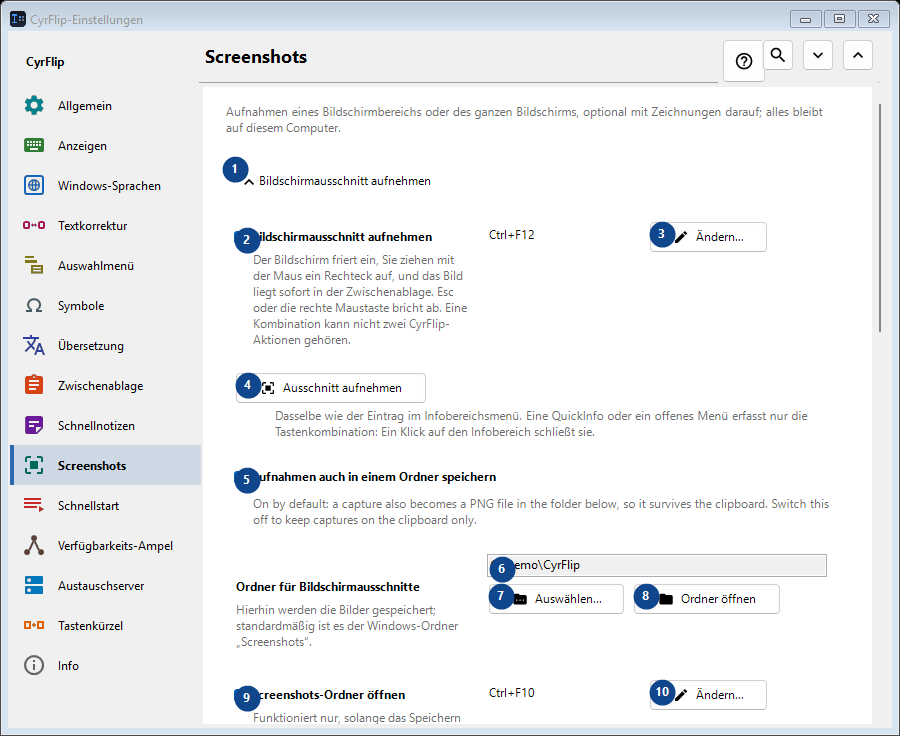
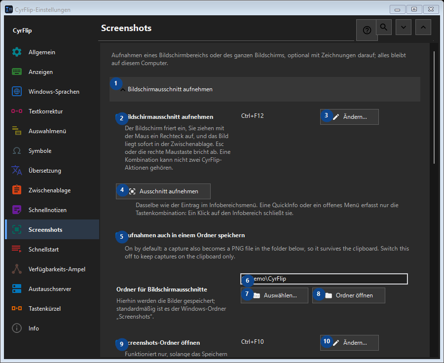

Screenshots
Zweck
Aufnahmen eines Bildschirmbereichs oder des ganzen Bildschirms, optional mit Zeichnungen darauf; alles bleibt auf diesem Computer.


Reihenfolge
Einstellungen gelten sofort. Eine feste Reihenfolge ist nicht nötig; nutzen Sie die Gruppen unten.
Elemente
1. Bildschirmausschnitt aufnehmen
Nutzen Sie diesen Befehl für die genannte Aktion. Lesen Sie eine Bestätigung, bevor Sie zustimmen.
Ihre Tastenkürzel2. Bildschirmausschnitt aufnehmen
Der Bildschirm friert ein, Sie ziehen mit der Maus ein Rechteck auf, und das Bild liegt sofort in der Zwischenablage. Esc oder die rechte Maustaste bricht ab. Eine Kombination kann nicht zwei CyrFlip-Aktionen gehören.
Ihre Tastenkürzel3. Ändern - Bildschirmausschnitt aufnehmen
Nutzen Sie diesen Befehl für die genannte Aktion. Lesen Sie eine Bestätigung, bevor Sie zustimmen.
Ihre Tastenkürzel4. Ausschnitt aufnehmen
Dasselbe wie der Eintrag im Infobereichsmenü. Eine QuickInfo oder ein offenes Menü erfasst nur die Tastenkombination: Ein Klick auf den Infobereich schließt sie.
Ihre Tastenkürzel5. Aufnahmen auch in einem Ordner speichern
On by default: a capture also becomes a PNG file in the folder below, so it survives the clipboard. Switch this off to keep captures on the clipboard only.
Ihre Tastenkürzel6. Ordner für Bildschirmausschnitte
Wählen Sie den Wert zur benachbarten Beschriftung oder geben Sie ihn ein. Prüfen Sie ihn vor dem Fortfahren.
Ihre Tastenkürzel7. Auswählen - Ordner für Bildschirmausschnitte
Nutzen Sie diesen Befehl für die genannte Aktion. Lesen Sie eine Bestätigung, bevor Sie zustimmen.
Ihre Tastenkürzel8. Ordner öffnen - Ordner für Bildschirmausschnitte
Nutzen Sie diesen Befehl für die genannte Aktion. Lesen Sie eine Bestätigung, bevor Sie zustimmen.
Ihre Tastenkürzel9. Screenshots-Ordner öffnen
Funktioniert nur, solange das Speichern der Aufnahmen in einen Ordner eingeschaltet ist. Öffnet den Ordner, in den CyrFlip die Aufnahmen schreibt. Eine Kombination kann nicht zwei CyrFlip-Aktionen gehören.
Ihre Tastenkürzel10. Ändern - Screenshots-Ordner öffnen
Nutzen Sie diesen Befehl für die genannte Aktion. Lesen Sie eine Bestätigung, bevor Sie zustimmen.
Ihre Tastenkürzel11. Ganzer Bildschirm aufnehmen
Nutzen Sie diesen Befehl für die genannte Aktion. Lesen Sie eine Bestätigung, bevor Sie zustimmen.
Ihre Tastenkürzel12. Ganzer Bildschirm aufnehmen
Ein Tastendruck: Alle Bildschirme werden als ein Bild aufgenommen und landen direkt in der Zwischenablage. Nichts friert auf dem Bildschirm ein.
Ihre Tastenkürzel13. Ändern - Ganzer Bildschirm aufnehmen
Nutzen Sie diesen Befehl für die genannte Aktion. Lesen Sie eine Bestätigung, bevor Sie zustimmen.
Ihre Tastenkürzel14. Ganzen Bildschirm aufnehmen
Dasselbe wie der Menüeintrag „Ganzer Bildschirm aufnehmen“ im Infobereich.
Ihre Tastenkürzel15. Auf Aufnahmen zeichnen
Nutzen Sie diesen Befehl für die genannte Aktion. Lesen Sie eine Bestätigung, bevor Sie zustimmen.
Ihre Tastenkürzel16. Auf Aufnahmen zeichnen
Nach der Aufnahme bleibt das eingefrorene Bild auf dem Bildschirm - zeichnen Sie Ovale, Rechtecke, Linien und Pfeile darauf.
Ihre Tastenkürzel17. Ausschnitt mit Zeichnen aufnehmen
Capture a selected region and draw on it. One chord cannot belong to two CyrFlip actions.
Ihre Tastenkürzel18. Ändern - Ausschnitt mit Zeichnen aufnehmen
Nutzen Sie diesen Befehl für die genannte Aktion. Lesen Sie eine Bestätigung, bevor Sie zustimmen.
Ihre Tastenkürzel19. Ganzen Bildschirm mit Zeichnen aufnehmen
Capture every display as one picture and draw on it. One chord cannot belong to two CyrFlip actions.
Ihre Tastenkürzel20. Ändern - Ganzen Bildschirm mit Zeichnen aufnehmen
Nutzen Sie diesen Befehl für die genannte Aktion. Lesen Sie eine Bestätigung, bevor Sie zustimmen.
Ihre Tastenkürzel21. Ausschnitt aufnehmen und zeichnen
Dasselbe wie die Kombination „Ausschnitt mit Zeichnen“.
Ihre Tastenkürzel22. Ganzen Bildschirm aufnehmen und zeichnen
Dasselbe wie die Kombination „Ganzen Bildschirm mit Zeichnen aufnehmen“.
Ihre Tastenkürzel